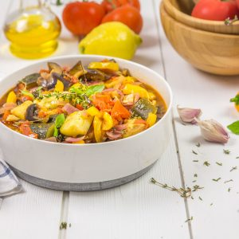

Ratatouille

Bonjour tout le monde!! Aujourd’hui je vous retrouve avec la recette de la ratatouille, une recette pleine de bons légumes du soleil et qui nous fait du bien!!
Pour ceux qui désespéraient lire une de mes nouvelles recettes (vous êtes exigeants quand même j’ai à peine deux jours de retard!!) me voilà « enfin »!!
J’ai été assez fatiguée dernièrement, avec le boulot, un chéri super chiant (je blague évidemment) et surtout cette satanée allergie qui ne me quitte plus je n’avais pas trop la force pour écrire un article. Et vu que je n’aime pas bâcler les choses et vous poster des recettes peu détaillées j’ai préféré attendre pour mieux revenir (pour les inquiets j’espère que vous êtes maintenant rassurés!!)
Revenons en maintenant à cette ratatouille! Cette recette c’est « la » recette que l’on fait vraiment très régulièrement à cette époque de l’année. Je n’ai qu’une petite demi-heure le midi pour manger alors les recettes comme celles-ci me sauvent la vie. J’en prépare une assez grosse quantité et il n’y a plus qu’à rechauffer et c’est bien plus sain que le club sandwich du supermarché voisin ;-)!!
Si vous aimez vous aussi ce type de plat je pense que la frita devrait vous plaire (moi je préfère la frita à la ratatouille mais il faut faire plaisir à tout le monde donc on alterne)!
Je vous laisse découvrir ma recette de la ratatouille et n’hésitez pas à me faire un retour si vous faîtes cette recette à votre retour ça me fait toujours très plaisir d’échanger avec vous!!
Ingrédients
- Aubergines - 2
- Courgettes - 3
- Oignons rouges - 2
- Gousses d'ail - 3
- Poivron rouge - 1
- Poivron jaune - 1
- Tomates - 6
- Citron - jus d'un citron
- Thym frais - quelques brins
- Romarin (facultatif) - 1-2 brins
- Huile d'olive
- Concentré de tomates - 1 càs
Instructions
- Préparer vos ingrédients. Couper les oignons et l'ail Couper les aubergines et les courgettes en gros morceaux grossiers (voir sur les photos) mais libre à vous de les couper comme vous préférez... Faites de même avec tous les ingrédients et réserver
- Dans une poêle, verser un peu d'huile d'olive (1 à 2 càs)
- Jetez-y les courgettes, les poivrons et les aubergines
- Laisser cuire 3 bonnes minutes en remuant régulièrement avec une cuillère en bois
- Dans une cocotte, verser un peu d'huile d'olive et ajoutez l'ail et l'oignon
- Faire revenir 5 bonnes minutes puis ajoutez les tomates et le thym frais
- Laisser cuire 5 minutes en remuant avec une cuillère en bois sur feu vif
- Ajouter le reste des ingrédients précuits (courgettes, aubergines, poivrons)
- Remuer
- Verser l'équivalent d'un jus de citron (environ 4 càs de jus de citron) et ajouter le concentré de tomates
- Remuer et laisser cuire à feu vif pendant 5 bonnes minutes
- Saler poivrer et ajouter le romarin
- Baisser le feu et laisser cuire pendant 30 minutes en moyenne Je dis en moyenne car cela va dépendre de la taille de vos légumes et de comment vous aimez votre ratatouille. Je vous conseille de vérifier la cuisson à partir de la 20ème minutes, de goûter, et de poursuivre selon la cuisson de vos légumes. J'ai déjà cuit une ratatouille pendant 45 minutes!
- Le lendemain, si vous avez des restes, n'hésitez pas elle sera toujours aussi bonne... Vous pouvez aussi utiliser la ratatouille dans une tarte, comme base de sandwich ou avec un œuf façon piperade! C'est à vous de voir!
Les tips de la communauté
Succès classique avec photos appétissantes. Les commentaires sugent des variantes et complément de recette. Un visiteur proposé des lardons fumés pour relever légèrement, tandis qu'un autre recommande des poivrons verts ou rouges plutôt que jaunes.
Astuces
- Ajouter des lardons fumés avec de l'ail pour relever le goût subtilement
- Servir sur un fond de tarte pour valoriser les restes
- Accompagner avec du riz pour un plat complet
Variantes suggérées
- Utiliser des poivrons verts ou rouges au lieu de jaunes
- Ajouter des lardons fumés avec de l'ail